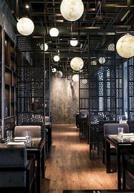
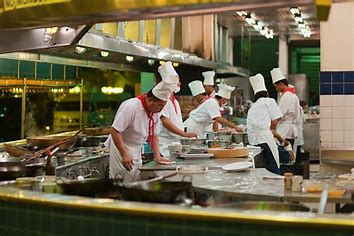

<!DOCTYPE html>
<html lang="en">
<head>
    <meta charset="UTF-8">
    <meta name="viewport" content="width=device-width, initial-scale=1.0">
    <title>about</title>
    <link rel="stylesheet"a href="./styles.css">
</head>
<body>
    
</body>
</html>

<div class="dinner room">
    <div class="img-container">
        
        <div class="img-content">
            <pre><h3>
  A restaurant dining room typically features an inviting and well-organized space designed for comfort and ambiance.

  The room often includes a variety of seating arrangements, such as tables for two, four, or more, with plush chairs or benches.
  
  The tables are usually set with clean, crisp linens, polished silverware, glasses, and neatly folded napkins. 
  
  Lighting is crucial, with soft, warm lights creating a cozy atmosphere, often supplemented by candles or pendant lights. 
  
  The decor might reflect the restaurant's theme, whether modern, rustic, or classic, with elements like artwork, plants. 
  
  The flooring could range from polished wood to tile or carpet, depending on the vibe the restaurant wants to create. 
 
  freshly prepared dishes wafts through the air, inviting guests to relax and enjoy their meal.</h3>
  </h3></pre>
    </div>
</div>
</div>
<div class="luxury room">
    <div class="img-container">
        
        <div class="img-content">
<pre><h3></h3>
A restaurant dining room exudes opulence and sophistication, designed to provide an unforgettable experience. 

Tables are often crafted from high-quality materials such as marble or dark polished wood, adorned with crisp, high-thread-count linens and sparkling silverware. 

Fine china and crystal glassware are meticulously arranged, with fresh flowers or decorative centerpieces adding a refined touch.
    
The seating is plush, with velvet or leather chairs that are both comfortable and stylish.

Walls are often decorated with original artwork or luxurious wall coverings, adding to the room’s sense of exclusivity.

Background music is carefully selected to enhance the ambiance without overpowering conversation, often featuring classical or jazz tones.

Service in such a space is discreet yet attentive, with waitstaff dressed impeccably, ensuring every detail of the dining experience is perfect, from the moment guests arrive to the final course.</pre>
</div>
</div>
</div>
<div class="emplyees">
    <div class="img-container">
        
        <div class="img-content">
        <pre><h3>
    Restaurant employees play specific roles to ensure excellent service and smooth operations:

    Welcomes guests, manages reservations, and seats diners with a warm, professional demeanor.
         
    Takes orders, serves food, and ensures guests have everything they need. They are polite, knowledgeable, and efficient.
            
    Mixes drinks and interacts with customers. They are quick, personable, and skilled in a wide range of beverages.
            
    Prepare and present meals. The head chef may interact with guests, particularly in upscale settings.
            
    Support the head chef, manage kitchen flow, and ensure dishes are perfectly prepared.
            
    Oversees the entire operation, ensuring high standards of service and guest satisfaction.
            
    Each role is vital to creating a positive dining experience for guests.</h3></pre>
        </div>
    </div>
</div>